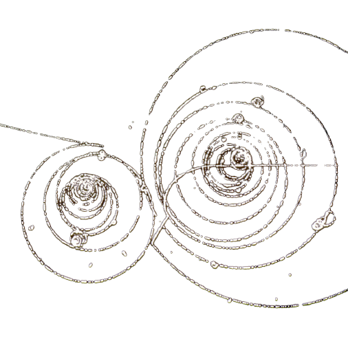

Each of the fermions has it’s own antiparticle with the only difference of an opposite charge or chirality. According to the Big Bang Theory: When the universe was first created, there was around the same amount of antiparticles (antimatter) and regular particles, with a very slight preponderance towards regular matter, which meant that after every antiparticle and particle hit each other and get annihilated there always stayed a small percentage of matter not finding a partner forming us and everything else in the universe how we know it today. Antiparticles can interact with other antiparticles and form the same structured hadrons as the regular matter. Humans can already produce some antiparticles themselves by squeezing large amounts of energy in a very small space in the Large Hadron Collider, so it forms a pair of an equal amount of particles and antiparticles. During the annihilation lots of energy gets released, so there is a idea of using antimatter as a bomb, tho It’s currently impossible to produce enough amounts of it

Sources:
https://en.wikipedia.org/wiki/Antiparticle
https://home.cern/science/physics/antimatter
https://www.youtube.com/watch?v=Lo8NmoDL9T8